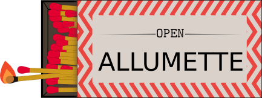
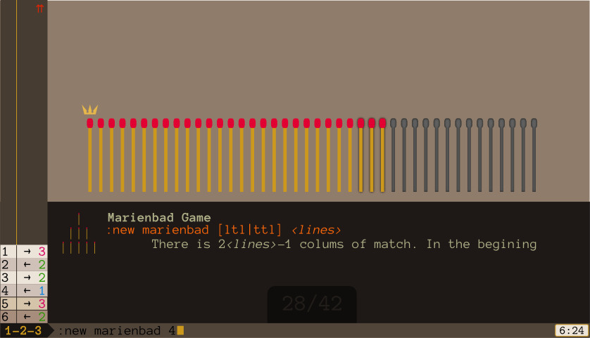
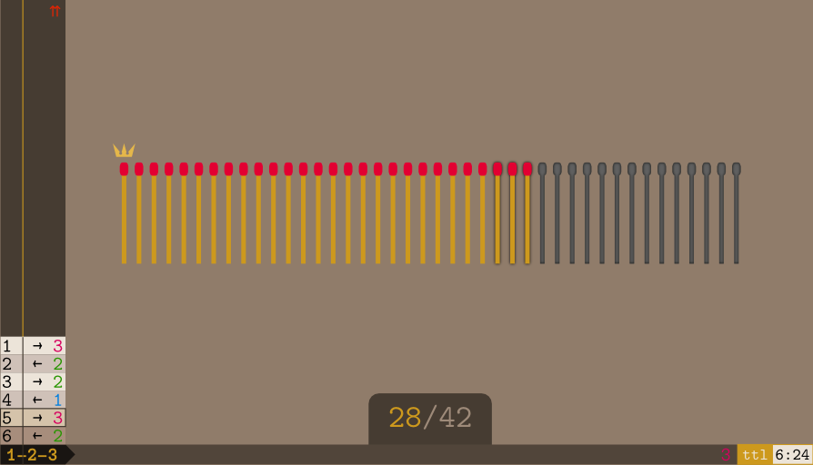
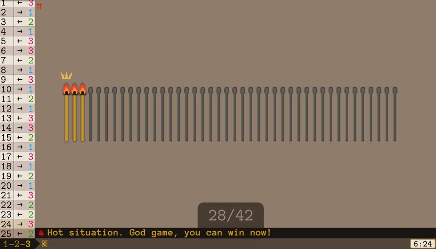
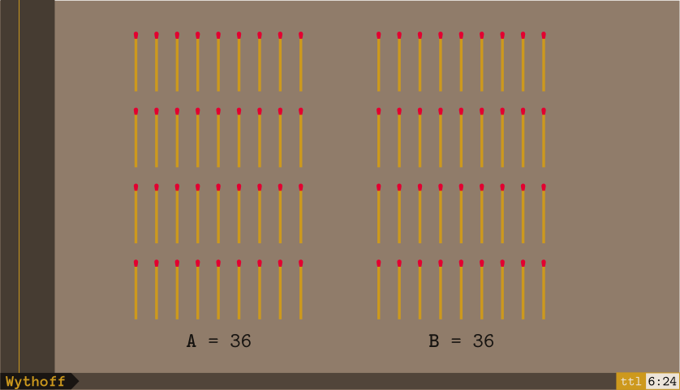
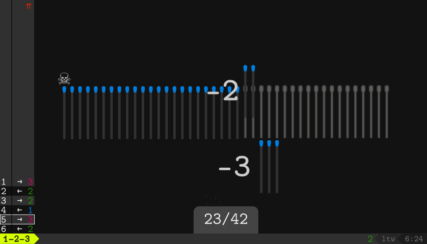
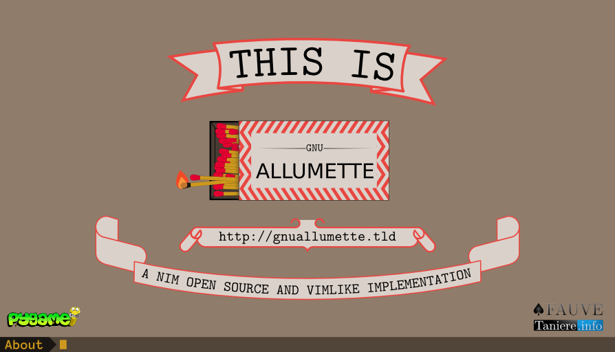
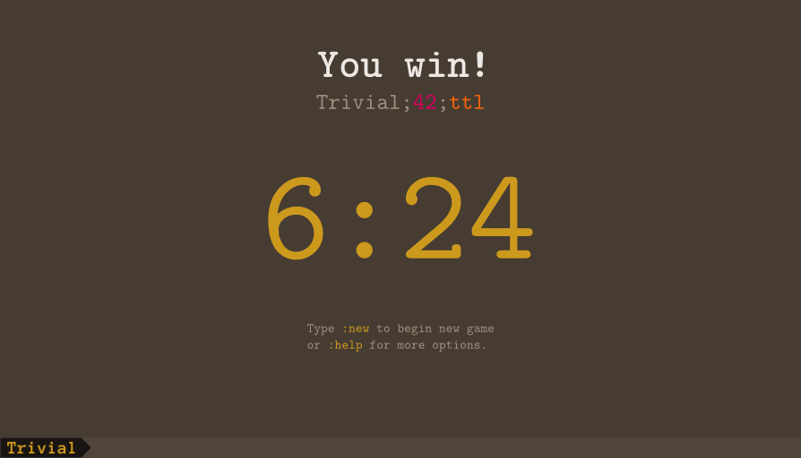
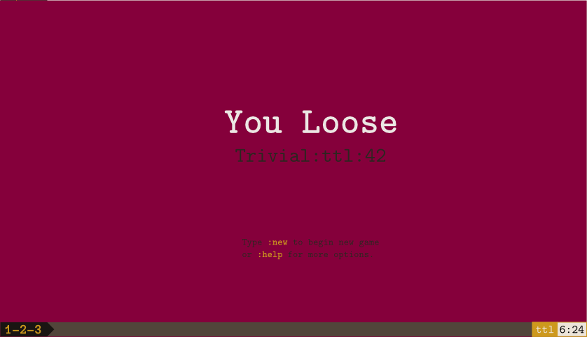
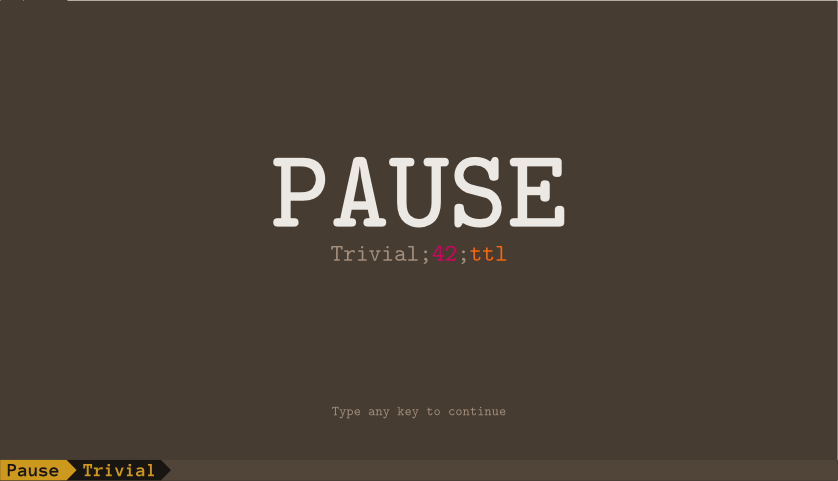

Nom
Resumé
openallumette [ [-n|--number] SeedNumber ] [ [-v|--varient] [trivial | marienbad | grundy | wythoff ] [-w [ttl|ltl] ] openallumette Descriptor openallumette [-h|--help] [-v|--version] [--hall-of-fame]
openallumettetutor openallumette --tutor
Logo

Description
openallumette est une implémentation du jeu de Nim en Python se basant sur la bibliothèque Pygame, et conçue pour fonctionner seulement avec un clavier (comme vim).
Au premier lancement, un tutoriel sur les commandes et les moyens d'interaction avec l'interface est affiché.
Ce tutoriel ne sera pas affiché lors des lancements suivants même si vous pouvez le voir à nouveau en entrant la commande openallumettetutor.
Notez que les jeux de Nim ont une solution mathématique. Dès que vous la trouvez pour une variante, vous gagnez à tous les coups, il devient alors inintéressant de jouer à la variante.
C'est justement la raison d'être d'openallumette: guider les amateurs vers cette solution.
Dans les futures versions, toutes les variantes du jeu connues seront disponibles.
Ce jeu a été conçu pour les matheux et les amateurs sérieux de jeux. Plus tard, des outils pour mieux comprendre les jeux de Nim seront ajoutés.
⚠ Si vous cherchez un jeu enfantin et une interface graphique, passez votre chemin. Open Allumette est fait pour les nerdz par un geek, comme s’il s’agissait d’un éditeur de texte pour programmeurs. Et nous en sommes fiers.
Règles
Le jeu de Nim classique est un jeu au tour-par-tour. Les règles exactes dépendent de la variante, généralement le joueur doit prendre la dernière allumette (mode ttl pour "take-the-last" soit "prends la dernière") ou forcer l'adversaire à la prendre (mode ltl pour "let-the-last" soit "laisse la dernière"). Pour le moment openallumette ne permet de jouer que contre un bot. Dans de futures versions, un mode multijoueur à travers XMPP sera probablement disponible.
Utilisation
Le joueur peut directement lancer le jeu avec les configurations désirées en utilisant les options -n, -v et -w (Voir la section Options), ou aussi avec la chaîne de descripteur standard (Voir la section Configuration du descripteur).
À partir du moment où Open Allumette est lancé, le joueur peut ouvrir une autre session avec les commandes normales ou ex (voir les sections CommandEs et Ex commands’s).
Options
-n,--number=Graine- Démarre une partie avec Graine comme valeur de graine (valeur par défaut: 16)
- -v,
--varient=VariantE - Démarre une partie avec
VariantEcomme variante de jeu (valeur par défaut: trivial) -wwtw- Démarre une nouvelle partie en mode wtw
, il y a deux modes possibles, ttl et ltl. Voir la sectionwtw Mode pour plus de détails. -c,--color-sheme=palette- Utilise palette comme palette à utiliser.
--hall-of-fame- Affiche le tableau d'honneur dans la console.
Composition de la fenêtre
Lors d'une partie, l'écran est normalement divisé en trois parties comme schématisé ci dessous. La zone des commandes permettant de taper les commandes, la zone d'historique montrant une liste d'actions et la zone des allumettes donnant une vue de la situation actuelle de la partie.
╔═════╦════════════════════════════════════════════════════╗ ║ ║ ║ ║ ║ ║ ║ ║ ║ ║ ║ ║ ║ ║ ║ ║Zone ║ ║ ║ ║ ║ ║ ║ Matchs zone ║ ║ ║ ║ ║ ║ ║ ║ ║ ║ ║ ║ ║ ║ ║ ║ ║ ║ ║ ║ ║ ║ ╠═════╩════════════════════════════════════════════════════╣ ║Command zone ║ ╚══════════════════════════════════════════════════════════╝
Command’s zone
It’s probably the main zone of the game because is the main part of the user’s interaction. It’s set on the window’s bottom and is divided into five parts witch are, frome left to right :
- Varient name
- Depending of the current screen displayed by the game, this zone remember witch varient or part of the game is currently displayed.
- Ex command zone
- This zone display the ex-mode commands. See Commands’s section for more details.
- Key bindings
- This zone display the normal-mode commands. See Key Bindings’s section for more details.
- Mode
- This zone display the WTW variable, it could be
ttl(take the last) orltl(let the last). See wtw Mode’s section for more details. - Passed time
- This zone display the time passed since the bigining of the game.
History zone
The history zone display chronological list of actions the opponents do in the game. See Key Bindings’s section for more details about controling this area.
Match area
This part display current state of the game.
Key Bindins
- n
- Reload a new game with exactly the same parametters as the current one.
- p
- Put game on pause and suspend the time count.
numberu- Undo one (or number) last action(s).
numberr- Redo one (or number) last undid action(s).
- F8
- Toggle showing help mode for some varients.
- ↓, j
- Go backward in the history of ex commands.
- ↑, k
- Go forward in the history of ex commands.
- ⇟, ALT-j
- Drop down history list.
- ⇞, ALT-k
- Drop up history list.
- ⇲, J, G
- Go to history list bottom.
- ⇱, K, gg
- Go to history list top.
- CTRL-↓, CTRL-j
- Drop down autocompletion help menue in ex mode.
- CTRL-↑, CTRL-k
- Drop up autocompletion help menue in ex mode.
Ex commands
The “Ex commands” refer to all commands witch begin with the colon (:) and generaly his typing apear in the Command zone. This kind of commands could do many things, especially advanced features. Some ex commands, the ones described on the Commands’s section are for general use and could be used in any situations. Some others ex commands are specific to a varient game and are described in the Varients’s section.
To enter ex mode, the user have to type colon key (:) and a cursor will apear in the command zone. When the user begin typing a command, he can get at any time more information about it with Tab key witch will bring an autocompletion mode.

Then, the autocompletion mode open a box over the command zone, showing a quick help about the command writen.
At any time, the player could hide the autocompletion box with Esc key.
Commands
All this commands could be entered at any time and they are displayed in the command zone in the window’s bottom for the ex-commands with a cursor (witch are begin with the prefix :).
:n,:newvarient SeedNumber wtw
:n,:newDescriptor-
Open new game with following options:
- varient
-
The varient name, witch could be
trivial(default),marienbad,grundy, orwhythoff. See Varient’s section for more details about each varient. - SeedNumber
- The seed number. It repreasent the number in the initial situation of a particular function. His exact usage depend of the varient.
- wtw
-
It represent the condition of wining and could take two values:
ttl(take-the-last) where the player have to take the last match to win ;ltl(let-the-last) where the goal for the player have to force his oponent to take the last match.
Alternatively, you can just use the configuration descriptor described in the The configuration descriptor’s section.
:about- Open the license screen.
:colorsheme varient- Change colorsheme to the varient one.
:quit,:q, ZZ- Quit the game.
:saveas,:w- Save the current game with time in a file.
:open,:o- Open registered game
:rules- Show the rules for the current varient.
:help command,:h command- Getting help about a command.
:tutor- Open the tutorial mode.
:tip- Bring a tip.
Varients
The syntax of the game actions mainly depand of the variant you are playing. And in all cases, you have to be in normal mode; to get it, just press ⎋ key.
Trivial (The default one)
Initializing
In the Trivial varient theire is only one heap of match, so the SeedNumber defined in the initializing exactly match the number of match in this unique heap. The trivial varient didn’t have assistant mode.
Rules
In the trivial variente, theire is only one heap of SeedNumber match. And, on each turn, every player have to take one, two, or tree matchs.
Intreface and command
To del 1, 2, or 3 matchs from the total number of matches in this varient theire is two possibilities. When the player type a del command, before it take effect, it is showen in the key bindings zone (See the Command’s zone’s section), untel he tape enter key.

It depend of the colorsheme but in general, the allowed matchs is distinguished by a shadow effect or some other effect. And the last match have a crown on top if the ttl mode is activated or a skull and bones if the ltl mode is activated.
- -[1|3|3], [1|2|3]⏎
- You can explicitly indicate the number of match you whant to del, for this, just type the number of match followed by ⏎. Optionnaly, the number of match you want to take could be precead by minus symbol -.
- =NumberToLet⏎
- You can also indicate the number of match you hant to let. For this you just have to prefix the number of match by equal sign =.
Wining situation
When the player could take the last match (so there is only tree match in the maximum), the remain matches are displayed burning (but this depend of the colorsheme). 
Marienbad
Initializing
In the Marienbad variente, theire is as line number as the SeedNumber defined in the initializing. The top line contain one match, and the number of match increase at each column by two matchs. So we can calculate the number of colums with “2×SeedNumber-1”.
For example, with SeedNumber=4, we get the following configuration:
0 | 1 | | | 2 | | | | | 3 | | | | | | | 0 1 2 3 4 5 6
Rules
At his turn, the player must take as matchs as he want from any column but from one and only one column. Depending of the WTW mode, the winer will be the one who can take the last match or force the oponent to take it.
Intreface and commands
To take matchs in the Marienbad varient, there are two information to give:
- The column number.
- The number of match to take (or, alternativly, to let).
So, theire is two operators and syntaxs possible:
- column=matchs
- Witch heap the number remain matchs to matchs in column of the number column
- column-matchs
- Witch del matchs matchs in column of the number column.
Assistant mode (Spoiler)
WARNING: This section spoil the trick. Read it only if you have difficulties with the resolution of the Marienbad solution.
In addition to that, the Marienbad’s varient have an assistant mode helping the player to understind how the mathematical mecanism is runing and how to find the wining strategy. By pressing the F8 key witch bring a little box with indications.
The box show the total match of each line and his binary representation. The wining strategy consist to maintain a binary value’s total (represented in the box by the T value) even at each turn.
As example, at the begining of marienbad game with a seed number equal to 4, this is how the assistant’s box appear:
1 = 0 0 1 3 = 0 1 1 5 = 1 0 1 7 = 1 1 1 --------- T = 2 2 4
The number 5 represent the total match of the 3th line, his benary value is 101. And T represent the total of benary values summed in decimal system. For wining, the T value have to be alway even at the end of the turn.
Grundy
Initialization
In the Grundy varient theire is only one heap in the bigining, so the SeedNumber is the number of the matchs in the innitial heap.
Rules
In this varient, the player didn’t take matchs and the goal isn’t to take the last one. Theire is only one heap of matchs and the fiirst player have to divided into two unequel heaps. In the next turn, each player have to take one child heap and divided into two unequal heaps. In the ttl mode, the goal is to make the oponant unable to play. In the ltl mode, the goal for the player is to be unable to play.
Interface and commands
In the openallumette implementation, all heaps have a number identifier code in the Grudy’s varient (exept the first, beacuse numbering him is useless). This identifier code is formed after the father heaps’s idintifier code and the number of current heap, separated with a dot “.”. When the initial heap is divided it give two child heap witch are numbered 0 and 1. After that, when a heap with an identifier code “N is divided, it give two others heap with identifiers codes N.0 and N.1.
Now, if the player want to divied a heap with the identifier code heap into two heap with a and b matchs (with a+b=the number of match of the concerned heap), he have to indicate the identifier code of the heap and of the two terms a or b. Note it isn’t necessary to indicate the two terms of this substraction, because the second one is defined after the initial number of matchs in the heap.
- heap:term0, heap:term0+term1
- Divide the heap with the identifier code heap into two child heaps with respectivelly term0 and term1 matchs and respectively heap.0 and heap.1 as identifier code. Note only one term is needed, the second one is absolutely facultative.
Assistant mode
TODO
Wythoff
Initialisation
In the Whythoff varient, theire is tow heaps of the same number of match in the initial situation, so the SeedNumber defined in the initialiasation is the number of matchs in each heap.
Rules
In the Whythoff varient, theire is two heaps and the players have, at theire turns two choices of actions:
- Take the same quantities of matchs from the two heaps.
- Take any quantities of matchs but from on and only one heap.
Interface and commands
The two heaps are named A and B. So, depending of if the player want take the same number of matchs from the two heaps or from one and only one heap, theire is two possible commands: 
- [-]matchs
- Take matchs matchs from the two heaps.
- heap-matchs
- Take matchs matchs from the heap heap.
- heap=matchs
- Set the remain matchs to matchs in the heap heap.
The configuration descriptor
The configuraton descriptor is a short string describing the main configuration of a Nim session, including all variables. The main form of a configuration descriptor is:
FirstPlayer Variente;SeedNumber;wtw
Where the variable have the following meanings:
- FirstPlayer
-
Describe witch will be the first player.
+for the human player ;-for the computer. The default is the user. - Variente
- Varient name, see the Varient’s section for allowed vallues.
- SeedNumber
- The seed number. His usage depend of the choosen varient.
- wtw
- The “What to (do for) win” variable. See wtw Mode’s section for more details.
For example the descriptor +Marienbad;26;ttl means the curent game in Marienbad varient, with 26 lines (then 57 columns), the winer is the player who take the last and the human player will be the first to play.
Note you can place all this ellements in another order, Open Allumette will understund it, but it steel better to place it in the canonical order. In addition to that, the first player information is optionnal.
wtw Mode
The wtw variable (for “Wat to [do for] win”) define the conditions of wining and the goal of the game. Generaly, the wining in the classical Nim game is set in two modes, one when the goal is to unlaw the opponent to be able to play, witch called “normal” mode, and another mode where the goal is to force the opponent to play the last possible movement.
In Open Allumette, the normal mode is called ttl (for “take the last”) and the other mode is called ltl (for “let the last”).
The exact meaning of ttl and ltl could depend of the varient played. But in general, the ttl means the winer is the player who could take the last match of the game and ltl means the winer is the player who will be forced to take the last match.
However, there is some exeptions like with the grundy varient where the ttl means the goal it to divide the last splitable heap and ltl means the goal is to force the opponent to divide the last splitable heap. See Grundy for more details.
Colorsheme
It is possible to change the default colorsheme with another one and also edit new one with CSS.
For changing the current colorsheme, just use --colorsheme or -c in the shell, or the ex command :c[olorsheme]. And then, chose a colorsheme between the installed ones.
- Molokai
- 
Bibliography
Here is some ressources for mathematical studys and comprehension of the Nim game.
- Grundy’s varient
-
- P. M. Grundy. Mathematics and Games. Eureka, vol.27, 1964.
- E. Berlekamp, J. H. Conway, and R. Guy. Winning Ways for your Mathematical Plays. Academic Press, 1982.
Screenshots
You can see all screenshots at the official webstie.
- About screen
- 
- Wining screen
- 
- Falling screen
- 
- Pause screen
- 
Installation
- Linuces and BSD
- TODO
- Windows
- TODO
Licence
This game, included the related files and manpages, is placed under the CC-by-sa 3.0 lincence.
Author
The mayor part of Open Allumette is writen by Fauve (aka Idriss al Idrissi) http://taniere.info and could be foud on Github at https://github.com/FauveNoir/.